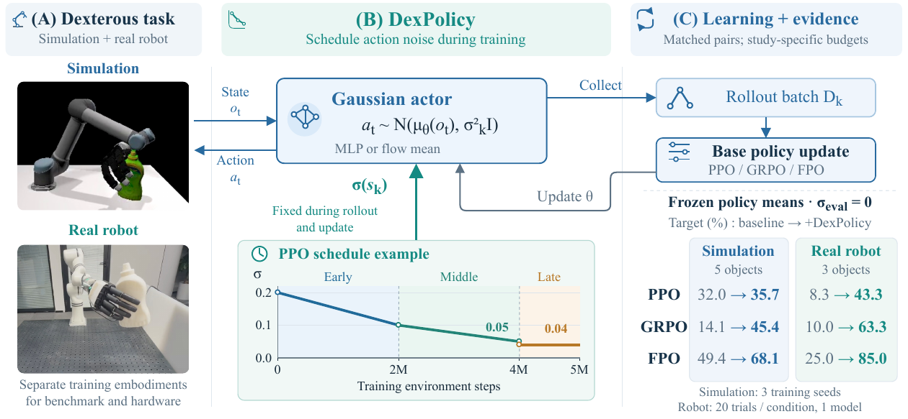
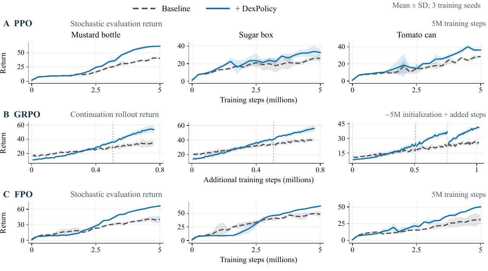

Method
Scheduled exploration
DexPolicy Overview
(A) Simulation and real-robot tasks. (B) Gaussian noise scheduled by training steps; the PPO example does not represent within-trial phases or other methods' schedules. (C) Paired updates and deterministic target success (%) from the baseline to DexPolicy. Simulation averages five shared objects over three seeds; hardware averages three objects with 20 trials from one model per condition. Policies are object-specific, with distinct simulation and hardware embodiments; GRPO uses continuation budgets.
Learning Curves
Learning histories on the three hardware object geometries, using separate benchmark policies. PPO and FPO show stochastic evaluation returns; GRPO shows continuation rollout returns. Shading indicates sample standard deviation over three seeds; GRPO includes development seed 0. Dotted lines mark GRPO phase reloads; PPO checkpoints are nominal. Compare conditions within panels: return measurements and budgets differ across methods.
